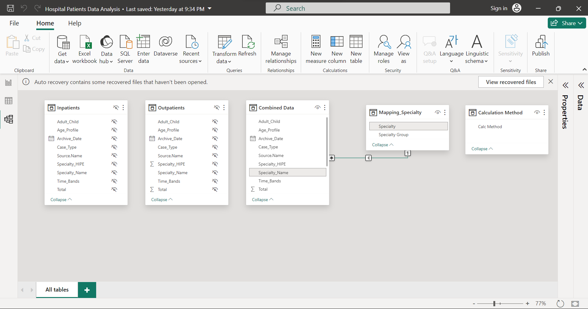
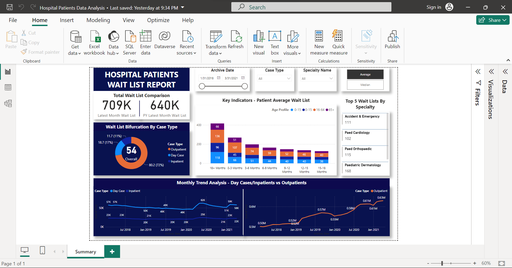

Goal
The Hospital Patients Waiting List Dashboard is designed to provide real-time updates on the status of patient waiting lists. It facilitates the analysis of historical monthly trends across inpatient and outpatient categories, utilizing key metrics such as average and median waiting times, along with the total current waitlist count.
About the Data
The datasets utilized in this analysis encompass data spanning from 2018 to 2021, capturing details of both outpatients and inpatients within a hospital setting. This includes pertinent information regarding medical cases, case types, time bands, and age profiles. Additionally, another dataset supplements this information by providing insights into specialty areas and their respective specialty groups.
Data Loading and Transformation
The Power Query Editor was utilized to import and preprocess two datasets containing information on both inpatients and outpatients. Before merging, the datasets underwent cleaning procedures to standardize column formats and address any inconsistencies in column values. This involved replacing erroneous values and ensuring uniformity in column types across both datasets to prevent compatibility issues. Notably, a 'Case Type' column was created for the outpatients dataset to match its counterpart's structure. Subsequently, the datasets were merged to facilitate thorough analysis.

Data Modelling
The dataset, which comprises information regarding specialties and their corresponding specialty groups, was mapped to the specialty names within the merged dataset.
Dashboard Design and Creation
Following the application of transformations and the necessary dataset mapping, the data is seamlessly visualized. To facilitate the calculation of average and median values, new measures were devised using DAX. Additionally, a new table was constructed using DAX, allowing for the convenient toggling between average and median values.
The dashboard offers an insightful breakdown, enabling the real-time tracking of patient waiting lists based on the latest month or the previous year's data. Further analysis delves into the historical monthly trends of waiting lists across inpatient and outpatient categories, with filters applied based on archive date, case type, and specialty name. The inclusion of buttons labeled 'Average' and 'Median' allows for effortless switching between these values, with the figures dynamically updating accordingly. Moreover, the dashboard highlights the top 5 wait lists on average, filtered by specialty, providing a comprehensive overview of the dataset.
Conclusion
Based on the latest month's records, key insights reveal that outpatient cases predominated among the hospital's recorded cases, with age profiles of 18+ months exhibiting the highest waitlist volumes. Remarkably, outpatients demonstrated an upward monthly trend, while inpatients and day cases experienced marginal fluctuations. It is important to note that figures within the analysis are subject to change based on the archive date.